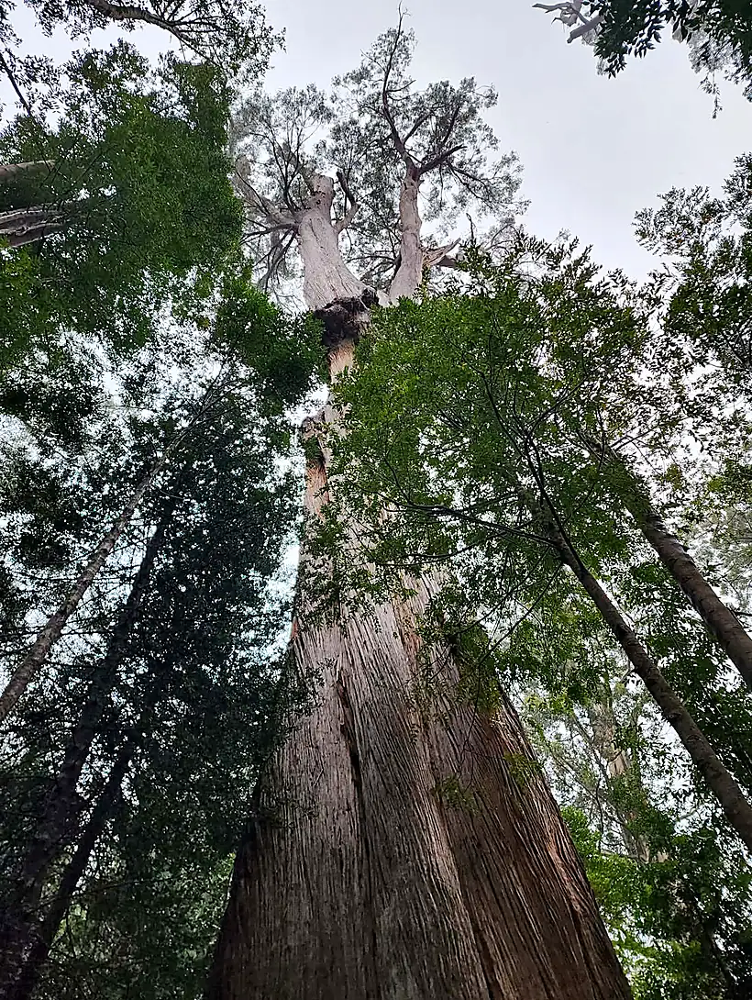
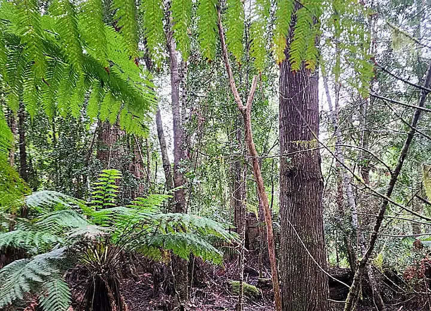
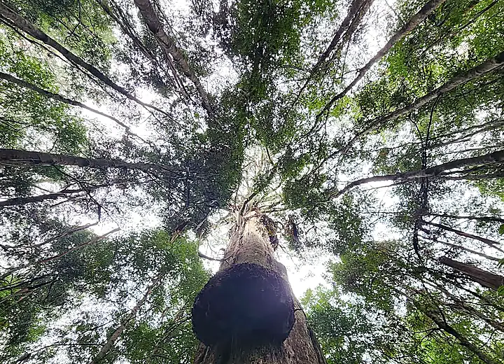
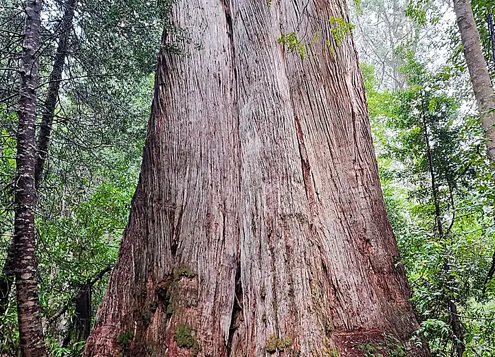
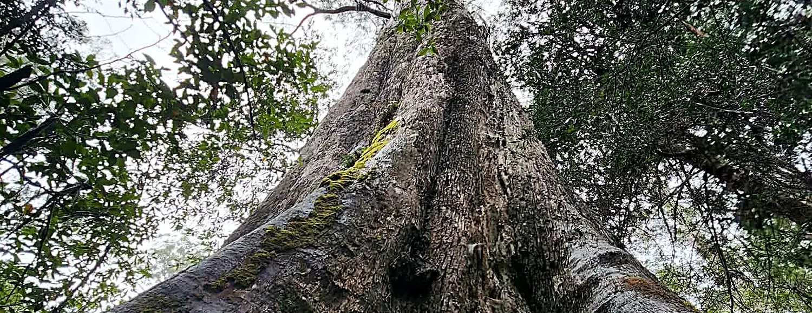

Consulting arboriculture · Melbourne
Tree reports that get through council the first time.
Most reports that get sent back are not wrong. They are unanswerable. A thorough inventory that never quite says what the proposed slab does to tree seven leaves a planner with nothing to assess. I write the other kind, to the current standard, with the fee agreed before I start.
Quotes back within one business day. Reports to AS 4970:2025 and Clause 52.37 as it now stands, not as it stood in 2009.

How it works
A fixed number, back within one business day
No charge to quote, and none if it turns out you do not need a report. How quoting works.
The problem
A request for further information costs six weeks and the client's confidence
Almost all of them come from the same short list of gaps, and none of those gaps are about arboriculture. They are about what got left out of the writing up.
Impact never actually stated
A thorough description of the trees that never says what the works do to each one. The planner has nothing to assess, so it goes back. Every retained tree needs a sentence connecting the works to that tree and stating the consequence.
The neighbour's tree left out
A tree over the fence whose root zone reaches into your site is squarely in scope, and that neighbour is often the objector. Leaving it out looks like either an oversight or an omission.
Protection written as a generic note
“Standard tree protection in accordance with AS 4970” gives a planner nothing to condition. Where the fence goes, at what radius, when it goes up, who supervises, what may happen inside it. Specific enough to be enforced is the bar.
You are not really paying for a report. You are paying for a permit that issues without a request for further information.
Services
What I do, and what it costs
Ten services covering a project from site acquisition through to sign-off, all quoted fixed before any work starts.
Tree Removal Report
Council has asked for an arborist report before it will consider removing your tree. This is that report, and it is usually the whole job.
ResidentialArboricultural Impact Assessment
The report councils ask for when your works reach a tree. Every tree assessed, every zone calculated to AS 4970:2025, every encroachment justified.
DevelopmentClause 52.37 Canopy Tree Report
The provision that landed in September 2025 and caught most of the industry flat. Assessment, permit triggers and replacement canopy strategy.
Residential · PlanningPreliminary Tree Assessment
Before you draw. What is on site, what is protected, what will constrain the footprint, and what it will cost you to keep.
Before you designTree Protection Management Plan
The TPMP councils condition, structured to AS 4970:2025. Specific enough for a planner to enforce and a site foreman to follow.
DevelopmentRoot & Infrastructure Investigation
Non destructive investigation of what the roots are actually doing, and whether the tree is really the cause. Sewers, footings, paving, retaining walls.
InvestigationArboricultural Supervision
Named on the permit, on site at the hold points, signing off the stages. AS 4970:2025 expects an arborist across the whole project.
On siteConstruction Monitoring
Scheduled attendance across the build, with the stage records that close out tree conditions on the permit without an argument.
On siteTree Risk Assessment
A defensible position on a tree you are worried about. ISA TRAQ methodology, written so the reasoning holds up if anyone later asks why you did what you did.
TRAQ qualifiedTree Protection Zone Advice
A written answer on NRZ, SRZ and TPZ for a specific tree and a specific proposal, when you do not yet need a full report.
Written adviceNew provision
Clause 52.37 caught a lot of people out
Amendment VC289 introduced Clause 52.37 Canopy Trees to every Victorian planning scheme on 15 September 2025. It can require a planning permit to remove a tree on a residential site where nothing else would have triggered one.
A tree is caught if it meets all three of: more than 5 m tall, trunk circumference over 0.5 m measured at 1.4 m, and a canopy at least 4 m across. It applies in most residential zones but not Low Density Residential.
The trap is the boundary tree. A canopy tree with any part of its trunk within 6 m of the narrowest street frontage or 4.5 m of the rear boundary loses the exemptions that would otherwise apply on a site with an existing dwelling.
Replacement canopy is the part that bites
Sites up to 1,000 m² owe a set number of replacement trees, scaling from one on a site under 100 m² to six between 701 and 1,000 m². Above 1,000 m² the test switches to a minimum 20% canopy cover of the site area.
Replacements must reach at least 6 m tall and 4 m wide at maturity, and need real ground to do it in. That is a design constraint. Far cheaper to find out before the plans are drawn than after.
How it works
Four steps, no surprises
Send me the plans
Site plan, proposed works, and the address. If you do not have plans yet, tell me the address and what you are hoping to build. That is often the better time to call.
Fixed quote within one business day
A number, what it covers, and what it does not. If the job needs two stages I will say so up front, not quote one and invoice for two.
Site inspection
Every tree measured and photographed on site, with the figures worked out while I am standing there. Nothing gets reconstructed at a desk a week later.
Report, and the follow-up
Delivered as a PDF you can lodge. If council comes back with a question about it, answering that is part of the job. It is not a variation.




Seven years in the canopy before I wrote a word about it
I climbed for a living before I started consulting. It is the difference between knowing what a standard says and knowing what actually happens when an excavator meets a root plate.
Councils
Local controls, council by council
Overlays, local policy and what each council's arborist actually sends reports back for. Written for the person lodging the application. Every other page out there is written for someone who just wants a tree gone.
Yarra
Clifton Hill, Fitzroy, Collingwood, Richmond, Abbotsford, Carlton North
Darebin
Northcote, Thornbury, Preston, Reservoir, Fairfield, Alphington
Merri-bek
Brunswick, Coburg, Pascoe Vale, Fawkner, Glenroy, Brunswick East
Banyule
Ivanhoe, Heidelberg, Eaglemont, Rosanna, Viewbank, Montmorency
Boroondara
Camberwell, Hawthorn, Kew, Balwyn, Glen Iris, Canterbury
Stonnington
Malvern, Toorak, Prahran, Armadale, Glen Iris, South Yarra
Whitehorse
Box Hill, Blackburn, Nunawading, Mitcham, Surrey Hills
Monash
Glen Waverley, Mount Waverley, Clayton, Oakleigh, Chadstone
Bayside
Brighton, Sandringham, Hampton, Black Rock, Beaumaris
Send me the plans and I will send you a number.
Fixed fee, quoted in writing within one business day, with the scope written down so nobody is surprised later. If it turns out you do not need a report, I will tell you that too.